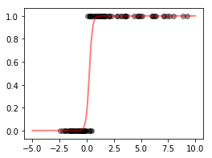

Logistic Regression¶
The purpose of this notebook is to validate macaw’s logistic
regression code. The original example is available in scikit-learn’s
documentation here:
http://scikit-learn.org/stable/auto_examples/linear_model/plot_logistic.html#sphx-glr-auto-examples-linear-model-plot-logistic-py
In [1]:
%matplotlib inline
import matplotlib.pyplot as plt
In [2]:
import numpy as np
In [3]:
from macaw.objective_functions import LogisticRegression
from macaw.models import LogisticModel
In [4]:
# generate some toy data
xmin, xmax = -5, 5
n_samples = 100
np.random.seed(0)
X = np.random.normal(size=n_samples)
y = (X > 0).astype(np.float)
X[X > 0] *= 4
X += .3 * np.random.normal(size=n_samples)
X = X[:, np.newaxis]
In [5]:
loss = LogisticRegression(y=y, X=X)
In [6]:
res = loss.fit(x0=np.random.rand(2))
In [7]:
res.x
Out[7]:
array([ 6.90880141, -1.64912633])
In [8]:
plt.figure(1, figsize=(4, 3))
plt.scatter(X.ravel(), y, color='black', alpha=.4)
X_test = np.linspace(-5, 10, 300)
model = LogisticModel(X_test)
plt.plot(X_test, model(res.x[0], res.x[1]), color='red', linewidth=2, alpha=.5)
Out[8]:
[<matplotlib.lines.Line2D at 0x113b5bcc0>]
